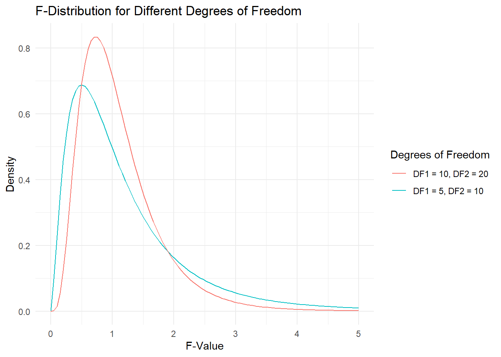

Chapter 14 Goodness of Fit
14.1 What is Goodness of Fit?
Definition of Goodness of Fit
Goodness of fit refers to the extent to which a statistical model accurately represents the observed data. It is a measure of how well the model’s predicted values align with the actual data points. A high goodness of fit indicates that the model provides an accurate representation of the data, whereas a low goodness of fit suggests that the model fails to capture the true relationships within the data.
Importance of Assessing How Well a Model Represents the Data
Evaluating the goodness of fit is a fundamental aspect of statistical modeling. It allows researchers to determine whether their model is a reliable tool for making predictions or testing hypotheses. A model with a good fit provides confidence that the relationships it describes are genuine and not the result of random variation. Conversely, a model with a poor fit may lead to incorrect conclusions and unreliable predictions.
Examples of When Goodness of Fit is Crucial in Psychological Research
In psychological research, goodness of fit is often used to evaluate whether a theoretical model explains observed behaviors or outcomes. For instance, researchers might develop a model to predict anxiety levels based on factors such as sleep quality, social support, and stress levels. By assessing the goodness of fit, they can determine whether their model accurately captures the relationships between these variables. A high goodness of fit would suggest that the model is valid and that the relationships identified are meaningful. In contrast, a poor fit might indicate that important variables have been overlooked or that the model’s assumptions are incorrect.
14.1.1 Why Goodness of Fit Matters
Implications of a Good or Poor Fit
The goodness of fit of a model has significant implications for the validity and reliability of research findings. A good fit indicates that the model provides an accurate representation of the data, allowing researchers to draw meaningful conclusions and make reliable predictions. On the other hand, a poor fit suggests that the model does not adequately capture the true relationships within the data, leading to potential misinterpretations and inaccurate predictions.
How Goodness of Fit Affects the Interpretation and Validity of Research Findings
When a model fits the data well, the results can be interpreted with greater confidence. For example, in a regression analysis, a high goodness of fit means that the estimated relationships between the independent and dependent variables are likely to be accurate. This, in turn, enhances the validity of the research findings, as the model is more likely to reflect the true underlying relationships. Conversely, if the goodness of fit is poor, the validity of the findings is compromised, as the model may not accurately represent the data.
Real-World Examples Where Assessing Fit is Essential
Predicting Outcomes: In clinical psychology, models are often used to predict outcomes such as the likelihood of developing a mental health disorder. The goodness of fit is crucial in these cases, as it determines the accuracy of the predictions. A well-fitting model can help clinicians identify at-risk individuals and intervene early, while a poorly fitting model may lead to incorrect assessments and potentially harmful consequences.
Validating Theories: In psychological research, goodness of fit is used to test and validate theoretical models. For instance, a researcher might develop a model that explains how cognitive biases influence decision-making. By assessing the goodness of fit, the researcher can determine whether the theoretical model is supported by the data. A good fit would validate the theory, while a poor fit might suggest the need for revision or further investigation.
Evaluating Interventions: In applied settings, such as education or public health, models are used to evaluate the effectiveness of interventions. The goodness of fit is critical in these contexts, as it indicates whether the intervention is having the desired effect. For example, if a model assessing the impact of a new teaching method on student performance has a good fit, it suggests that the method is effective. A poor fit, however, could indicate that the intervention is not working as intended or that other factors are influencing the outcomes.
Conclusion
Goodness of fit is a key concept in statistical modeling that has significant implications for the interpretation and validity of research findings. By assessing the fit of a model, researchers can ensure that their conclusions are based on accurate and reliable representations of the data. In psychological research, where the relationships between variables are often complex and multifaceted, evaluating goodness of fit is essential for developing valid theories, making accurate predictions, and designing effective interventions.
14.2 Chi-Square
14.2.1 Understanding the Chi-Square Test
Explanation of the Chi-Square Test
The Chi-Square test is a statistical method used to determine whether there is a significant difference between the observed frequencies in your data and the expected frequencies that you would expect if the data followed a specific theoretical distribution. In simpler terms, it helps you understand if what you observe in your data matches what you would expect based on a particular hypothesis or model.
Imagine you are conducting a survey to understand people’s favorite types of movies. You might expect that 25% of people prefer action movies, 25% prefer comedies, 25% prefer dramas, and 25% prefer horror films. After collecting data, you find that the actual preferences differ slightly. The Chi-Square test allows you to statistically assess whether these differences are due to random chance or if they are significant enough to suggest that your expectations (theoretical distribution) don’t match reality.
Key Concepts: Observed Frequencies, Expected Frequencies, Degrees of Freedom
Observed Frequencies: These are the actual counts or occurrences you observe in your data. For example, if you survey 100 people and 30 say they prefer action movies, 30 is the observed frequency for the action category.
Expected Frequencies: These are the counts you would expect to see if the data perfectly followed a specific theoretical distribution. Continuing with the movie example, if you expect an equal distribution of preferences, you would expect 25 people to prefer each type of movie (since 25% of 100 is 25).
Degrees of Freedom (df): This concept might sound complex, but it’s simpler than it seems. Degrees of freedom are related to the number of categories you’re working with and reflect how many of those categories are free to vary. In our movie example, if you have four categories (action, comedy, drama, horror), the degrees of freedom would be the number of categories minus one (df = 4 - 1 = 3).
When to Use the Chi-Square Test
The Chi-Square test is particularly useful when you want to compare the distribution of categorical data to a theoretical distribution. For example, you might use it to:
Test if a sample distribution fits a population distribution: Suppose you have data on the colors of cars in a parking lot, and you want to know if the distribution of colors (e.g., red, blue, black, white) matches the general distribution of car colors in the population.
Evaluate whether an observed frequency distribution matches an expected distribution: For instance, in psychological research, you might expect that people respond to a particular stimulus equally across different conditions. A Chi-Square test can help you determine if there’s a significant deviation from this expectation.
14.2.2 Calculating Chi-Square in R
Step-by-Step Guide to Performing a Chi-Square Goodness of Fit Test in R
Let’s walk through how you can perform a Chi-Square goodness of fit test using R, a statistical programming language. Don’t worry if you’re new to R—we’ll keep it simple and guide you through each step.
Example: Testing Whether a Sample of Psychological Test Results Fits an Expected Distribution
Imagine you conducted a psychological experiment where participants were asked to choose one of four symbols after being exposed to a stimulus. You hypothesize that participants would choose each symbol equally (i.e., you expect 25% of participants to choose each symbol). After running the experiment, you want to see if the actual choices match this expectation.
Here’s how you can do it in R:
# Step 1: Input your observed data
observed <- c(30, 25, 20, 25) # These are the counts of how many participants chose each symbol
# Step 2: Define your expected frequencies
expected <- c(25, 25, 25, 25) # You expect each symbol to be chosen equally
# Step 3: Perform the Chi-Square test
chisq.test(observed, p = expected / sum(expected))##
## Chi-squared test for given probabilities
##
## data: observed
## X-squared = 2, df = 3, p-value = 0.5724Interpreting the Chi-Square Statistic and P-Value
After running the test, R will provide you with a Chi-Square statistic and a p-value:
Chi-Square Statistic: This number tells you how much your observed data deviates from what you expected. A larger Chi-Square statistic indicates a greater deviation.
P-Value: The p-value helps you determine whether the deviation is statistically significant. If the p-value is less than 0.05, you typically conclude that the observed frequencies are significantly different from the expected frequencies, meaning your theoretical distribution doesn’t fit the data well.
14.2.3 Real-World Applications
Examples of Using the Chi-Square Test in Psychological Research
The Chi-Square test is widely used in psychological research to compare observed data with expected outcomes. Here are a few examples:
Behavioral Studies: Suppose you’re studying whether people prefer different types of reinforcement (e.g., verbal praise, material rewards) equally in a learning task. After collecting data, you can use a Chi-Square test to see if the preferences for each type of reinforcement are significantly different from what you expected.
Survey Research: If you conduct a survey and expect equal responses across different categories (e.g., agreement, neutral, disagreement) but observe a skew in responses, a Chi-Square test can help you assess whether this skew is statistically significant.
Clinical Psychology: In clinical settings, psychologists might use the Chi-Square test to compare the distribution of symptoms in a sample to the expected distribution based on diagnostic criteria. For example, if you expect certain symptoms to appear equally across patients but observe that some symptoms are more common, a Chi-Square test can quantify whether this difference is significant.
Discussion on the Limitations and Assumptions of the Chi-Square Test
While the Chi-Square test is a powerful tool, it does come with some limitations and assumptions:
Sample Size: The Chi-Square test requires a sufficiently large sample size to be reliable. If the sample size is too small, the test may not accurately detect differences.
Independence: The observations in your data must be independent of each other. This means that one participant’s response shouldn’t influence another’s.
Expected Frequencies: For the Chi-Square test to be valid, the expected frequencies should not be too low (typically, each expected frequency should be at least 5).
Despite these limitations, the Chi-Square test remains a fundamental tool for assessing goodness of fit in categorical data, helping researchers understand whether their observed data matches their theoretical expectations.
14.3 R-Squared
14.3.1 What is R-Squared?
Explanation of R-Squared
R-squared is a key concept in statistics, particularly in regression analysis. It’s a measure that tells us how well the independent variable(s) explain the variance in the dependent variable. In simpler terms, R-squared helps us understand how much of the changes we see in the outcome (dependent variable) can be attributed to changes in the predictor(s) (independent variables).
Imagine you’re trying to predict someone’s exam score (the dependent variable) based on the number of hours they studied (the independent variable). After running a regression analysis, R-squared gives you a number that tells you how much of the variation in exam scores can be explained by the variation in study hours. If R-squared is 0.75, this means that 75% of the variability in exam scores can be explained by the number of hours studied.
How R-Squared Quantifies the Goodness of Fit in Regression Models
In regression models, goodness of fit refers to how well the model’s predicted values match the actual data. R-squared is the most common way to quantify this fit. It ranges from 0 to 1, where:
- 0 means that the model does not explain any of the variance in the dependent variable. In other words, the model’s predictions are no better than simply using the average value of the dependent variable as a prediction for all data points.
- 1 means that the model explains all the variance in the dependent variable, indicating a perfect fit.
For example, if you’re using a model to predict anxiety levels based on hours of sleep, and R-squared is 0.6, this tells you that 60% of the variation in anxiety levels can be explained by the amount of sleep. The remaining 40% of the variation is due to other factors not included in the model.
Discussion on the Range of R-Squared Values
R-squared values range from 0 to 1, and different values indicate different levels of model fit:
R-squared = 0: This would mean that your model doesn’t explain any of the variability in the dependent variable. In practical terms, this suggests that your independent variable(s) have no predictive power in the context of this model.
R-squared between 0 and 0.3: This range typically indicates a weak fit, meaning the model explains only a small portion of the variance in the dependent variable. This might be acceptable in certain fields, like social sciences, where many factors influence behavior, but it often suggests that the model might be missing key predictors.
R-squared between 0.3 and 0.6: This range suggests a moderate fit. The model explains a reasonable amount of the variance but still leaves much unexplained. This is common in psychological research, where human behavior is complex and influenced by many variables.
R-squared between 0.6 and 0.9: This indicates a strong fit, meaning the model explains a large proportion of the variance in the dependent variable. In this range, you can be more confident that the independent variables are good predictors.
R-squared = 1: A perfect fit, which is extremely rare in practice. If you do get an R-squared of 1, it’s worth double-checking the model for overfitting, which means the model might be too tailored to the specific dataset and may not generalize well to other data.
14.3.2 Calculating R-Squared in R
Step-by-Step Guide to Calculating R-Squared in R Using a Linear Regression Model
Let’s walk through how to calculate R-squared in R using a simple linear regression model. Suppose you are trying to predict anxiety levels based on the number of hours of sleep.
Here’s how you can do it in R:
# Step 1: Input your data
sleep_hours <- c(8, 7, 6, 5, 4, 9, 7, 6, 5, 8) # Hours of sleep
anxiety_levels <- c(5, 6, 7, 8, 9, 4, 6, 7, 8, 5) # Anxiety levels
# Step 2: Fit a linear regression model
model <- lm(anxiety_levels ~ sleep_hours)
# Step 3: View the summary of the model, which includes R-squared
summary(model)## Warning in summary.lm(model): essentially perfect fit: summary may be
## unreliable##
## Call:
## lm(formula = anxiety_levels ~ sleep_hours)
##
## Residuals:
## Min 1Q Median 3Q Max
## -2.045e-15 -1.152e-16 1.660e-16 3.847e-16 9.421e-16
##
## Coefficients:
## Estimate Std. Error t value Pr(>|t|)
## (Intercept) 1.300e+01 1.187e-15 1.096e+16 <2e-16 ***
## sleep_hours -1.000e+00 1.779e-16 -5.622e+15 <2e-16 ***
## ---
## Signif. codes: 0 '***' 0.001 '**' 0.01 '*' 0.05 '.' 0.1 ' ' 1
##
## Residual standard error: 8.438e-16 on 8 degrees of freedom
## Multiple R-squared: 1, Adjusted R-squared: 1
## F-statistic: 3.16e+31 on 1 and 8 DF, p-value: < 2.2e-16In the output, you’ll see a section that lists the R-squared value. This number tells you how well the number of hours of sleep explains the variance in anxiety levels.
Interpretation of R-Squared Values in the Context of Psychological Research
Let’s say the R-squared value in your model is 0.65. This means that 65% of the variation in anxiety levels can be explained by the number of hours of sleep. In psychological research, this would be considered a reasonably strong fit, especially considering that human behavior is often influenced by multiple factors. The remaining 35% of the variation might be due to other factors like stress, diet, or personality traits, which are not included in the model.
14.3.3 Adjusted R-Squared
Introduction to Adjusted R-Squared
While R-squared is useful, it has a limitation: it can artificially increase as more predictors are added to the model, even if those predictors don’t actually improve the model’s fit. This is where adjusted R-squared comes in. Adjusted R-squared adjusts the R-squared value based on the number of predictors in the model, providing a more accurate measure of goodness of fit, particularly when comparing models with different numbers of predictors.
Example: Comparing Models with Different Predictors to See Which Best Fits the Data
Imagine you have two models:
- Model 1: Predicts anxiety levels based only on sleep hours.
- Model 2: Predicts anxiety levels based on sleep hours and social support.
You might find that Model 2 has a higher R-squared value than Model 1, but this could be just because you added another predictor. Adjusted R-squared takes into account the number of predictors and tells you whether adding the extra predictor actually improved the model’s fit.
Here’s how you can compare these models in R:
# Model 1: Anxiety ~ Sleep Hours
model1 <- lm(anxiety_levels ~ sleep_hours)
# Model 2: Anxiety ~ Sleep Hours + Social Support
social_support <- c(7, 8, 6, 5, 6, 8, 7, 6, 5, 7) # Example data
model2 <- lm(anxiety_levels ~ sleep_hours + social_support)
# View the summaries to compare adjusted R-squared
summary(model1)$adj.r.squared## Warning in summary.lm(model1): essentially perfect fit: summary may be
## unreliable## [1] 1## Warning in summary.lm(model2): essentially perfect fit: summary may be
## unreliable## [1] 1If the adjusted R-squared for Model 2 is higher than for Model 1, it suggests that social support genuinely adds value to the model, rather than just increasing R-squared due to the extra predictor.
Interpretation and Use Cases for Adjusted R-Squared
Adjusted R-squared is particularly useful when you are deciding between different models. It helps prevent overfitting by penalizing the addition of unnecessary predictors. In practice, a model with a higher adjusted R-squared is generally considered better because it balances model complexity with explanatory power.
14.3.4 Real-World Applications
Examples of Using R-Squared in Psychological Research
R-squared is widely used in psychological research to evaluate the fit of models that predict behavior or assess the effectiveness of interventions. Here are a few examples:
Predicting Behavior: Suppose you’re studying the relationship between social media usage and feelings of loneliness. After collecting data, you might use a regression model to predict loneliness based on the number of hours spent on social media. R-squared will tell you how much of the variability in loneliness can be explained by social media usage.
Assessing the Effectiveness of Interventions: Imagine you’re evaluating a new therapy designed to reduce stress. You could use a model to predict stress levels based on whether participants received the therapy. R-squared will indicate how much of the variation in stress levels is explained by the therapy, helping you assess its effectiveness.
Discussion on the Limitations of R-Squared, Including Overfitting and the Importance of Context
While R-squared is a valuable tool, it’s important to be aware of its limitations:
Overfitting: As mentioned earlier, adding more predictors to a model can increase R-squared, even if those predictors don’t improve the model’s accuracy. This is why adjusted R-squared is often preferred when comparing models.
Context Matters: An R-squared value that is considered “good” in one field might be seen as inadequate in another. For example, in psychology, where human behavior is complex, an R-squared of 0.4 might be considered acceptable, while in physical sciences, higher R-squared values are typically expected.
Not Always the Best Measure: R-squared doesn’t tell you whether your model is appropriate or whether the predictors are meaningful. It’s also insensitive to the presence of outliers and doesn’t provide insight into how well the model might generalize to new data.
In summary, R-squared is a powerful and widely used measure of model fit, but it’s essential to interpret it in context and to be aware of its limitations. By understanding both R-squared and adjusted R-squared, researchers can make more informed decisions when building and evaluating their models.
14.4 The F-Test for Comparing Models
14.4.1 What is the F-Test?
Explanation of the F-Test
The F-test is a statistical method used to compare the fits of two models to determine if one model provides a significantly better explanation of the data than the other. This is particularly useful when you’re working with “nested models” – where one model is a simpler version of the other (i.e., the simpler model is a special case of the more complex model). The F-test helps you decide whether the added complexity of the more advanced model is justified by a significantly better fit to the data.
For example, let’s say you’ve developed a simple model to predict stress levels based on the amount of workload. Now, you wonder if adding another predictor, such as gender, might improve the model. The F-test will help you determine whether the new, more complex model (workload + gender) is significantly better than the simpler model (workload alone).
Key Concepts: Null Hypothesis, Alternative Hypothesis, F-Statistic
Null Hypothesis (H₀): In the context of the F-test, the null hypothesis typically states that the simpler model is just as good at explaining the data as the more complex model. In other words, the additional predictor(s) in the complex model don’t provide a significantly better fit.
Alternative Hypothesis (H₁): The alternative hypothesis, on the other hand, states that the more complex model provides a significantly better fit to the data. This means that the additional predictor(s) in the complex model do improve the model’s ability to explain the variance in the dependent variable.
F-Statistic: The F-statistic is the value calculated by the F-test, which is used to compare the two models. It’s essentially a ratio of two variances – the variance explained by the more complex model compared to the variance explained by the simpler model. A higher F-statistic indicates that the more complex model explains significantly more variance than the simpler model.
When and Why to Use the F-Test in Psychological Research
The F-test is commonly used in psychological research when researchers want to determine whether adding additional variables to a model significantly improves the model’s ability to predict or explain an outcome. Here are a few scenarios where the F-test is particularly useful:
Adding Predictors: Suppose you’re studying the factors that influence anxiety. Initially, you might create a model predicting anxiety based on sleep duration. Later, you wonder if adding another predictor, like social support, might improve the model. The F-test will tell you if the additional predictor significantly enhances the model’s fit.
Model Comparison: Sometimes, researchers develop multiple models to explain the same outcome. For instance, one model might predict academic performance based solely on study hours, while another includes study hours, sleep quality, and class participation. The F-test can help you determine which model is better.
Assessing Interaction Effects: In some cases, you might be interested in whether the relationship between two variables changes depending on a third variable (an interaction effect). The F-test can be used to compare a model with interaction terms to a model without them, helping you decide if the interaction effect is significant.
14.4.2 Performing the F-Test in R
Step-by-Step Guide to Conducting an F-Test in R to Compare Two Regression Models
Let’s go through how you can perform an F-test in R using a practical example. Suppose you’re trying to predict stress levels based on workload. Initially, you create a simple model that only includes workload as a predictor. Then, you decide to test whether adding gender as a predictor improves the model.
Here’s how you can do this in R:
# Step 1: Input your data
workload <- c(5, 6, 7, 4, 8, 6, 7, 5, 9, 6) # Workload scores
stress_levels <- c(7, 8, 9, 6, 10, 7, 8, 6, 11, 8) # Stress levels
gender <- factor(c('M', 'F', 'M', 'F', 'M', 'F', 'M', 'F', 'M', 'F')) # Gender
# Step 2: Fit the simpler model (Model 1: Stress ~ Workload)
model1 <- lm(stress_levels ~ workload)
# Step 3: Fit the more complex model (Model 2: Stress ~ Workload + Gender)
model2 <- lm(stress_levels ~ workload + gender)
# Step 4: Perform the F-test to compare the two models
anova(model1, model2)## Analysis of Variance Table
##
## Model 1: stress_levels ~ workload
## Model 2: stress_levels ~ workload + gender
## Res.Df RSS Df Sum of Sq F Pr(>F)
## 1 8 2.0597
## 2 7 2.0000 1 0.059701 0.209 0.6614Interpretation of the F-Statistic and P-Value
After running the F-test in R, you’ll receive an output that includes the F-statistic and the p-value. Here’s how to interpret them:
F-Statistic: The F-statistic is a ratio that compares the fit of the two models. A higher F-statistic suggests that the more complex model provides a significantly better fit to the data than the simpler model.
P-Value: The p-value associated with the F-statistic tells you whether the improvement in fit is statistically significant. If the p-value is less than 0.05, you would typically reject the null hypothesis, concluding that the more complex model (including gender) significantly improves the prediction of stress levels.
Example Interpretation
Suppose the F-test output shows an F-statistic of 5.87 with a p-value of 0.03. This p-value is below the typical significance level of 0.05, meaning you would reject the null hypothesis. In this case, you’d conclude that adding gender as a predictor significantly improves the model’s ability to predict stress levels. The more complex model provides a better fit to the data than the simpler model, justifying the inclusion of the additional predictor.
Conclusion
The F-test is a powerful tool for comparing models in psychological research, helping you determine whether adding more variables or making your model more complex actually improves its explanatory power. By understanding the F-test, you can make informed decisions about model selection and ensure that your models are both accurate and parsimonious.
14.5 Understanding the F-Distribution
14.5.1 What is the F-Distribution?
Explanation of the F-Distribution and Its Role in the F-Test
The F-distribution is a fundamental concept in statistics, particularly in the context of the F-test. It’s a probability distribution that arises when comparing the variances of two different groups or models. The F-distribution plays a crucial role in the F-test because it provides the basis for determining whether the ratio of variances (or explained variability) between two models is significantly different from what we would expect by chance.
In simpler terms, when you run an F-test, you’re trying to see if one model is significantly better at explaining the data than another. The F-distribution helps you figure out how big the difference between the models’ variances needs to be for you to confidently say, “Yes, this model is better!” or “No, this model doesn’t offer much improvement.”
Discussion on the Characteristics of the F-Distribution
The F-distribution has some unique characteristics that set it apart from other statistical distributions:
Non-Symmetrical: Unlike the normal distribution, which is symmetrical and bell-shaped, the F-distribution is skewed to the right. This means that most of the distribution’s values are clustered near the lower end, with a long tail extending to the right. This skewness reflects the fact that ratios of variances (which the F-distribution represents) are inherently non-negative and can sometimes be very large.
Dependent on Degrees of Freedom: The shape of the F-distribution depends on two sets of degrees of freedom (df):
- Degrees of Freedom for the Numerator (df₁): This is associated with the number of predictors added in the more complex model.
- Degrees of Freedom for the Denominator (df₂): This is related to the total number of observations minus the number of predictors in the more complex model.
These degrees of freedom influence the spread and peak of the distribution. The larger the degrees of freedom, the more the distribution resembles a normal distribution.
How the F-Distribution is Used to Determine the Critical Value for the F-Test
The F-distribution is used to determine the critical value for the F-test, which is the threshold value that the F-statistic must exceed to reject the null hypothesis. This critical value is determined by looking up the degrees of freedom (df₁ and df₂) in an F-distribution table or using statistical software like R.
Here’s how it works in practice: - You calculate the F-statistic from your data, which is the ratio of the explained variance by the more complex model to the unexplained variance. - You compare this F-statistic to the critical value from the F-distribution. If your F-statistic is larger than the critical value, the result is statistically significant, and you reject the null hypothesis, concluding that the more complex model provides a significantly better fit.
This process is akin to setting a bar that your F-statistic needs to clear. The higher the F-statistic (relative to the critical value), the stronger the evidence that the additional predictors in your model significantly improve its fit.
14.5.2 Visualizing the F-Distribution in R
R Code for Plotting the F-Distribution
To really grasp the F-distribution, it helps to visualize it. R makes it easy to create plots that show how the F-distribution looks with different degrees of freedom. Let’s go through how you can visualize it.
Here’s a basic R code to plot the F-distribution:
# Step 1: Load necessary package for plotting
library(ggplot2)
# Step 2: Define a sequence of F-values
f_values <- seq(0, 5, length.out = 100)
# Step 3: Plot the F-distribution for different degrees of freedom
plot_df <- data.frame(
F_Values = f_values,
DF1_5_DF2_10 = df(f_values, df1 = 5, df2 = 10),
DF1_10_DF2_20 = df(f_values, df1 = 10, df2 = 20)
)
ggplot(plot_df, aes(x = F_Values)) +
geom_line(aes(y = DF1_5_DF2_10, color = "DF1 = 5, DF2 = 10")) +
geom_line(aes(y = DF1_10_DF2_20, color = "DF1 = 10, DF2 = 20")) +
labs(title = "F-Distribution for Different Degrees of Freedom",
x = "F-Value",
y = "Density",
color = "Degrees of Freedom") +
theme_minimal()
Example: Visualizing the F-Distribution with Different Degrees of Freedom to Understand Its Shape and How It Affects the F-Test
In the plot generated by the code above, you’ll see two F-distribution curves:
- DF1 = 5, DF2 = 10: This curve is more spread out, with a lower peak, indicating that with fewer degrees of freedom, the distribution is more variable.
- DF1 = 10, DF2 = 20: This curve is taller and narrower, showing that with more degrees of freedom, the F-distribution becomes more concentrated around its peak.
By visualizing these differences, you can see how the F-distribution changes depending on the complexity of your models (reflected in the degrees of freedom). When you conduct an F-test, the degrees of freedom determine where the critical value lies on this curve, which in turn influences whether your F-statistic is large enough to be considered significant.
14.5.3 Real-World Applications
Examples of Interpreting the F-Distribution in the Context of Psychological Research
The F-distribution plays a vital role in many types of psychological research. Here are a few examples:
Comparing Treatment Effects: Suppose you’re running a clinical trial to compare the effects of two different therapies on reducing anxiety. You start with a simple model that includes just one therapy, then add the second therapy as a predictor. By running an F-test and referring to the F-distribution, you can determine whether the second therapy significantly improves the model’s fit.
Educational Psychology: Imagine you’re studying the impact of different teaching methods on student performance. You might first model performance based on one teaching method, then add additional methods as predictors. The F-distribution helps you assess whether these additional methods provide significantly more explanatory power.
Discussion on the Significance of the F-Distribution in Determining the Fit of Statistical Models
The F-distribution is more than just a mathematical concept; it’s a practical tool that helps researchers make informed decisions about their models. By understanding and using the F-distribution, you can:
Determine Model Significance: The F-distribution allows you to assess whether the improvements in model fit are due to the added complexity or just by chance. This ensures that your models are both accurate and parsimonious, avoiding overfitting.
Guide Research Decisions: When faced with multiple models, the F-distribution and the F-test help you choose the model that best balances simplicity and explanatory power. This is crucial in psychological research, where models must be both interpretable and effective.
In summary, the F-distribution is a cornerstone of the F-test, providing the framework for evaluating whether more complex models significantly improve the fit of the data. Understanding how to visualize and interpret the F-distribution empowers researchers to make more informed, data-driven decisions, ultimately leading to more robust and reliable research outcomes.
14.6 Putting It All Together – Assessing Model Fit in Practice
14.6.1 Comprehensive Example
In this section, we will bring together the concepts of Chi-Square, R-squared, and the F-test to assess the goodness of fit for different models within the context of psychological research. This comprehensive example will demonstrate how these tools can be used in tandem to evaluate and compare models, helping you make informed decisions about your data analysis.
Scenario: Imagine you are a psychologist studying the factors that influence anxiety levels in college students. You hypothesize that anxiety levels are influenced by several factors: the number of hours spent studying per week, the amount of social support received, and whether the student has access to mental health resources on campus.
You want to determine: 1. Whether the distribution of students with and without access to mental health resources is equal across the population. 2. How well the number of study hours and social support explain the variance in anxiety levels. 3. Whether adding social support as a predictor significantly improves the model beyond just using study hours.
Step 1: Chi-Square Test for Distribution of Mental Health Resource Access
First, you want to test whether access to mental health resources is evenly distributed among the student population. You hypothesize that half the students have access and half do not.
# Data for Chi-Square test
observed_access <- c(45, 55) # Observed counts: 45 with access, 55 without access
expected_access <- c(50, 50) # Expected counts if distribution is equal
# Perform the Chi-Square test
chi_square_test <- chisq.test(observed_access, p = expected_access / sum(expected_access))
# Output results
chi_square_testInterpretation: The Chi-Square test will provide a statistic and a p-value. If the p-value is greater than 0.05, you fail to reject the null hypothesis, meaning the distribution of access to mental health resources is not significantly different from what was expected (equal distribution). If it’s less than 0.05, there is a significant difference.
Step 2: Assessing the Fit with R-Squared
Next, you decide to see how well the number of study hours and social support explain the variance in anxiety levels. You start with a simple linear regression model using only study hours and then include social support as an additional predictor.
# Data for regression analysis
study_hours <- c(10, 8, 12, 15, 7, 9, 11, 13, 14, 10)
social_support <- c(5, 6, 4, 8, 5, 6, 7, 8, 9, 7)
anxiety_levels <- c(7, 8, 6, 9, 7, 8, 6, 7, 9, 7)
# Simple regression model: Anxiety ~ Study Hours
model1 <- lm(anxiety_levels ~ study_hours)
# Multiple regression model: Anxiety ~ Study Hours + Social Support
model2 <- lm(anxiety_levels ~ study_hours + social_support)
# Summary of models
summary(model1)$r.squared # R-squared for model1
summary(model2)$r.squared # R-squared for model2Interpretation: The R-squared values from the summaries tell you how much of the variance in anxiety levels is explained by each model. For example, if R-squared for model1 is 0.60, then 60% of the variance in anxiety levels is explained by study hours. If adding social support increases R-squared to 0.80 in model2, then 80% of the variance is explained, suggesting that social support is an important predictor.
Step 3: Comparing Models with the F-Test
To determine if adding social support significantly improves the model, you use the F-test to compare the simpler model (study hours only) with the more complex model (study hours + social support).
Interpretation: The F-test will yield an F-statistic and a p-value. If the p-value is less than 0.05, you conclude that the more complex model significantly improves the fit, justifying the inclusion of social support as a predictor.
Conclusion of the Comprehensive Example
By combining the Chi-Square test, R-squared values, and the F-test, you’ve gained a comprehensive understanding of how well your model fits the data and whether adding additional predictors is beneficial. This process ensures that your conclusions about the factors influencing anxiety are based on solid statistical evidence.
14.6.2 Best Practices for Assessing Goodness of Fit
Tips on When to Use Each Test and Measure
Chi-Square Test: Use when you’re dealing with categorical data and want to compare observed distributions with expected distributions. It’s ideal for testing whether different groups or categories are equally represented or whether they deviate significantly from what you’d expect by chance.
R-Squared: Use R-squared as a measure of how well your model explains the variance in the dependent variable. It’s particularly useful in regression analysis to assess the overall fit of your model. Remember, though, that R-squared should not be the sole criterion for model selection.
F-Test: Use the F-test when you want to compare two models, especially when you’re deciding whether to add more predictors to a model. The F-test will help you determine if the added complexity actually improves the model’s ability to explain the data.
Common Pitfalls to Avoid When Assessing Model Fit
Overfitting: One common pitfall is adding too many predictors to a model, which can lead to overfitting. Overfitted models perform well on the training data but poorly on new, unseen data. The F-test can help mitigate this by ensuring that additional predictors genuinely improve the model.
Relying on a Single Statistic: Don’t rely solely on R-squared or any other single statistic. A high R-squared doesn’t necessarily mean the model is good; it could be that the model is overfitting or that it’s missing key variables that would provide a more accurate picture.
Ignoring Assumptions: Each statistical test comes with its own set of assumptions (e.g., independence of observations, homoscedasticity). Ignoring these assumptions can lead to incorrect conclusions. Always check that your data meets the assumptions of the test you’re using.
Importance of Considering Multiple Measures of Fit
No single statistic or test can tell you everything you need to know about the fit of your model. By considering multiple measures—such as combining Chi-Square tests for categorical data, R-squared for variance explanation, and F-tests for model comparison—you get a more nuanced and accurate picture of how well your model fits the data.
Using a combination of these methods allows you to cross-check your findings, ensuring that your model is both robust and meaningful. This multi-faceted approach is especially important in psychological research, where the complexity of human behavior often requires a thorough and comprehensive analysis.
14.7 Chapter Summary
In this chapter, we explored the concept of goodness of fit, which is crucial in determining how well a statistical model represents the data it aims to explain. We began by understanding the fundamental importance of goodness of fit in statistical modeling, especially in psychological research, where accurate models are essential for drawing valid conclusions.
We then delved into three key statistical tools used to assess goodness of fit:
Chi-Square Test: We learned that the Chi-Square test is used to compare observed frequencies with expected frequencies, helping researchers determine whether categorical data fits a specific theoretical distribution. This test is particularly valuable when working with categorical variables, allowing for the assessment of whether observed patterns in data significantly deviate from what would be expected by chance.
R-Squared: We discussed how R-squared measures the proportion of variance in the dependent variable that is explained by the independent variable(s) in a regression model. R-squared provides a quantitative assessment of how well a model fits the data, with values ranging from 0 (no fit) to 1 (perfect fit). We also explored adjusted R-squared, which adjusts for the number of predictors in the model, offering a more accurate measure of goodness of fit when comparing models with different numbers of predictors.
F-Test: The F-test was introduced as a method for comparing the fits of two nested models, determining whether adding additional predictors significantly improves the model’s explanatory power. The F-test, combined with the F-distribution, allows researchers to evaluate whether the added complexity of a model is justified by a better fit.
We then brought these concepts together in a comprehensive example, demonstrating how Chi-Square, R-squared, and the F-test can be used in tandem to assess and compare models in a psychological research context. This example illustrated the practical application of these tools, providing a step-by-step guide to conducting these tests in R and interpreting the results.
Finally, we covered best practices for assessing goodness of fit, emphasizing the importance of using multiple measures rather than relying on a single statistic. We highlighted common pitfalls to avoid, such as overfitting and ignoring assumptions, and provided tips on when to use each test and measure.
By the end of this chapter, you should have a solid understanding of how to assess the goodness of fit for different models in psychological research, using a combination of Chi-Square tests, R-squared, and F-tests. This knowledge will enable you to build more accurate, reliable, and meaningful models that better represent the complexities of the data you are studying.
14.8 Practice Exercises
14.8.1 Section 7: Practice Exercises
Below are the practice exercises for you to apply what you’ve learned in this chapter. After completing these exercises, you’ll have the opportunity to compare your answers with the answer key provided in the appendix.
14.8.1.1 Exercise 1: Chi-Square Goodness of Fit Test
Objective: Perform a Chi-Square goodness of fit test using the provided dataset. Interpret the Chi-Square statistic and p-value to determine whether the observed frequencies differ significantly from the expected frequencies.
Dataset:
- Observed frequencies: observed <- c(40, 35, 25) (e.g., three
categories of response to a psychological survey)
- Expected frequencies: expected <- c(33.3, 33.3, 33.3) (assuming
equal distribution across categories)
Instructions:
1. Perform the Chi-Square test in R.
2. Interpret the Chi-Square statistic and p-value.
3. Determine whether the observed frequencies are significantly
different from the expected frequencies.
14.8.1.2 Exercise 2: Calculating R-Squared for a Linear Regression Model
Objective: Calculate the R-squared value for a linear regression model using the provided dataset. Interpret the R-squared value and discuss what it indicates about the model’s fit.
Dataset: - Independent variable:
study_hours <- c(4, 6, 8, 10, 12, 14, 16, 18, 20)
- Dependent variable:
exam_scores <- c(55, 60, 65, 70, 75, 80, 85, 90, 95)
Instructions:
1. Fit a linear regression model to the data in R.
2. Calculate the R-squared value.
3. Interpret the R-squared value in the context of the model’s fit.
14.8.1.3 Exercise 3: Comparing Nested Models Using the F-Test
Objective: Compare two nested linear regression models using the F-test. Use the provided dataset and determine whether adding an additional predictor variable significantly improves the model. Interpret the F-statistic and p-value.
Dataset: - Predictor 1:
hours_of_sleep <- c(5, 6, 7, 8, 5, 6, 7, 8, 9)
- Predictor 2: caffeine_intake <- c(3, 2, 4, 5, 2, 3, 5, 6, 7)
- Dependent variable:
reaction_time <- c(12, 10, 9, 8, 13, 11, 10, 9, 7)
Instructions:
1. Fit a simple linear regression model using hours_of_sleep as the
predictor.
2. Fit a more complex model using both hours_of_sleep and
caffeine_intake as predictors.
3. Perform an F-test to compare the two models.
4. Interpret the F-statistic and p-value to determine if the more
complex model is significantly better.
14.8.1.4 Exercise 4: Visualizing the F-Distribution in R
Objective: Visualize the F-distribution with different degrees of freedom in R. Discuss how the shape of the F-distribution affects the critical value used in the F-test.
Instructions:
1. Plot the F-distribution in R using different degrees of freedom.
2. Observe how the shape of the F-distribution changes with different
degrees of freedom.
3. Discuss how these changes affect the critical value used in the
F-test.
14.8.1.5 Exercise 5: Comprehensive Analysis
Objective: Apply what you’ve learned by conducting a comprehensive analysis that includes a Chi-Square test, R-squared calculation, and an F-test. Use the provided dataset and write a report summarizing your findings and interpretations.
Dataset:
- observed_frequencies <- c(30, 45, 25)
- expected_frequencies <- c(33.3, 33.3, 33.3)
- study_hours <- c(3, 5, 7, 9, 11, 13, 15, 17, 19)
- exam_scores <- c(50, 55, 60, 65, 70, 75, 80, 85, 90)
- stress_levels <- c(7, 8, 6, 9, 7, 8, 6, 7, 9)
- social_support <- c(5, 6, 4, 8, 5, 6, 7, 8, 9)
Instructions:
1. Perform a Chi-Square goodness of fit test using the observed and
expected frequencies.
2. Calculate the R-squared value for a regression model predicting exam
scores based on study hours.
3. Compare two nested models using the F-test to determine whether
adding social support as a predictor significantly improves the model
for predicting stress levels.
4. Write a report summarizing your findings, including interpretations
of the statistical results.